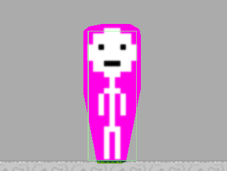
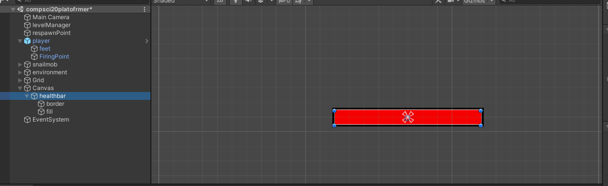

What I have done so far is ive just gotten the basic platformer things done. this includes very basic collsion detection, movement for the player, AI patrol (which currently cannot detect a wall infront of it, just if the space below is a platform or not), a placeholder for skill shooting (for now the player just shoots a projectile when you click.) and instantaneous death when you touch the snail mob, and instant respawn afterwards. what i hope to get done this week is HP and attacks, possibily inventory too.


Had to completely redo the healthbar system because new unity version doesn't work very well with old code and i spent 4 hours trying to get it to work. hope it works this time!
